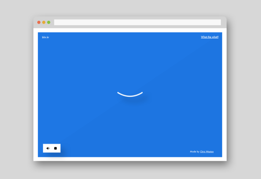

Eye strain is a real problem for those who sit at a computer. It is caused by decreased blinking while working long hours focusing on computer screens - leading to fatigue and headaches.
To reduce not only eye strain but neck, back and shoulder pain, it is important to take frequent breaks from your screen. This is where the 20-20-20 rule comes into play.
The 20-20-20 rule is simple; Every 20 minutes take a 20 second break and focus your eyes on something at least 20 feet away.
Simple.
Since I found it nearly impossible, while engrossed in my work, to remember to take this regular break every 20 minutes, I decided to create Blynker....
What is it?
Blynker is a handy web tool that reminds you throughout the working day to take short breaks for your eyes.
Just open Blynker when you start your working day, hit start and leave it in the background for the rest of the day!
You will be notified every 20 minutes to take a break. And that's all that's to it!
Who is it for?
Everyone who spends more than a hour per day looking at a display. Designers and office workers will find the tool particularly helpful.
Why use it?
When you are working at a computer it is easy to forget about time. This leads to eye strain and other physical problems. Blynker does the timing for you, so no need to watch the clock or be distracted by timers.
I hope you find it useful :)